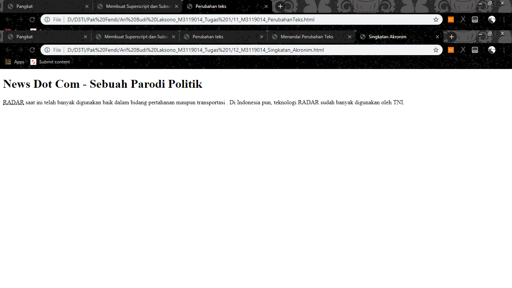

Membuat Singkatan
KODE PROGRAM
<!DOCTYPE html>
<html>
<head>
<meta charset-"UTF-8">
<title>Singkatan Akronim</title>
</head>
<body>
<h1>News Dot Com - Sebuah Parodi Politik</h1>
<p>
<abbr title="Radio Detecting and Ranging" >RADAR</abbr>
saat ini telah banyak digunakan baik dalam bidang
pertahanan maupun transportasi . Di Indonesia pun, teknologi
RADAR sudah banyak digunakan oleh TNI.
</p>
</body>
</html>
HASIL PROGRAM
News Dot Com - Sebuah Parodi Politik
RADAR
saat ini telah banyak digunakan baik dalam bidang
pertahanan maupun transportasi . Di Indonesia pun, teknologi
RADAR sudah banyak digunakan oleh TNI.
SCREENSHOT

KESIMPULAN
Dari koding di atas, Dapat disimpulkan bahwa Didalam HTML terdapat tag yang dapat menjelaskan kepada pembaca atau pegunjung web anda.
tentang suatu singkatan akan ditandai dengangaris bawah(underlined).
Kembali Ke Halaman Utama